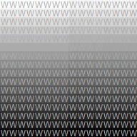
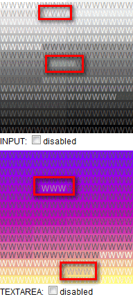
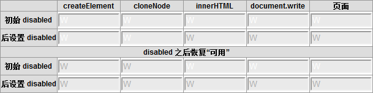

HF3006: Chrome Safari Opera 中 INPUT、TEXTAREA 元素的 disabled 属性值为 true 时其前景颜色会发生变化，但在 Chrome Safari 中某些情况下 disabled 属性值由 true 转为 false 后，其前景颜色不会更新至最初的设定色
标准参考
W3C HTML4.01 规范关于失效的控件（Disabled controls）的描述中对 disabled 属性进行了详细介绍：被设置 disabled 属性的表单控件将不再允许用户输入。而 disabled 属性使一个元素出现如下特征：
- 无法再获得输入焦点；
- 被跳过 TAB键导航（即通过TAB键在控件直接跳转输入焦点时，此元素将被忽略）；
- 不是 successful controls。
被设置了 disabled 后的渲染由用户端决定，如将元素 "置灰" 。
关于 disabled 属性 的详细信息，请参考 HTML4 规范 17.12.1 中的内容。
问题描述
各浏览器对于 INPUT、TEXTAREA 元素设置了 disabled 之后的效果处理不尽相同。IE 中会为文字设置一个阴影；Firefox 则保持文字前景色不变；Chrome Safari 会根据元素的背景色自动调整一个前景色；Opera 会将前景色变为 '#6D6D6D'。
但是在 Chrome Safari 中 disabled 属性由 true 转为 false 后，其前景颜色不会更新至最初的设定色，需要使元素重新获得焦点后浏览器才会对前景色进行更新。
造成的影响
Chrome Safari 中的这个现象可能造成被设置 disabled 的 INPUT、TEXTAREA 元素在使其重新可用后，其被浏览器自动调整的前景色不会更新为最初的设定颜色。
受影响的浏览器
| Chrome Safari |
|---|
问题分析
W3C 规范中没有明确说明在表单元素设置了 disabled 之后该如何渲染 "失效" 的元素，所以各浏览器之间出现了差异。
首先看看各浏览器对于 "失效" 的 INPUT 元素的渲染差异。
请看以下代码：disabled_input.html
<style>
* { font:12px/1 Arial; }
input { width:12px; height:12px; padding:0; margin:0; border:0 none; color:#aaa; float:left; outline:none;}
</style>
<div style="width:192px; overflow:hidden;">
<script>
for (var i = 255; i >= 0; i--) {
document.write('<input type="text" value="W" style="background:rgb(' + i + ',' + i + ',' + i + ');" disabled />');
}
</script>
</div>
代码中创建了 16x16 共 256 个 INPUT 元素，其背景色分别为由白至黑共 256 级灰度颜色。所有的 INPUT 元素设置为 disabled。
这段代码在各浏览器中运行效果为：
| IE6 IE7 IE8 | Firefox | Chrome Safari | Opera |
|---|---|---|---|
 |
 |  |
 |
- 在 IE6 IE7 IE8 中，INPUT 元素内的文字颜色并没有变化，仍然为 "#AAA"，但其下方出现了白色阴影用于区分前景色和背景色；
- 在 Firefox 中，INPUT 元素内的文字颜色也没有变化，仍然为 "#AAA"，所以当前景色与背景色比较靠近时，几乎无法看清楚文字；
- 在 Chrome Safari 中，浏览器根据 INPUT 元素的背景色自动调整 "失效" 的前景色（调整的计算方法参见本文最后一段），调整后的前景色均为灰度系颜色，这使得当前景色与背景色比较靠近时，仍然可以看到文字内容；
- 在 Opera 中，INPUT 元素的前景色变为了 "#6D6D6D"，但仍然存在前景色与背景色混淆无法识别的情况。
下面继续分析当通过脚本将 INPUT 元素的 disabled 属性重新设置为 false 使其 "可用" 后各浏览器之间的差异。
分析以下代码：disabled_input_and_textarea.html
<style>
* { font:12px/1 Arial; }
input.i, textarea.t { width:12px; height:12px; padding:0; margin:0; border:0 none; color:#aaa; float:left; overflow:hidden; resize:none; outline:none;}
</style>
<select id="aaa"><option>11</option></select><input id="" type="text" value="W" style="color:#aaa;background:#eaeaea" disabled />
<div style="width:192px; overflow:hidden; margin-bottom:5px;">
<script>
function enableInput(dis) {
for (var i = 255; i >= 0; i--) {
document.getElementById('i' + i).disabled = dis;
}
}
for (var i = 255; i >= 0; i--) {
document.write('<input id="i' + i + '" class="i" type="text" value="W" style="background:rgb(' + i + ',' + i + ',' + i + ');" disabled />');
}
</script>
<div style="float:left; width:100%; height:20px; line-height:1.2;">
INPUT: <input type="checkbox" id="i" onclick="enableInput(this.checked);" checked /><label for="i">disabled</label>
</div>
</div>
<div style="width:192px; overflow:hidden;">
<script>
function enableTextarea(dis) {
for (var i = 255; i >= 0; i--) {
document.getElementById('t' + i).disabled = dis;
}
}
for (var i = 255; i >= 0; i--) {
document.write('<textarea id="t' + i + '" class="t" type="text" style="background:rgb(' + (255 - parseInt(i / 2)) + ',' + (255 - i * 2) + ',' + (128 + parseInt(i / 2)) + ');" disabled>W</textarea>');
}
</script>
<div style="float:left; width:100%; height:20px; line-height:1.2;">
TEXTAREA: <input type="checkbox" id="t" onclick="enableTextarea(this.checked);" checked /><label for="t">disabled</label>
</div>
</div>
上面代码总体结构与之前的相同，新增了对 TEXTAREA 元素的测试。点击 disabled 复选框可以设置 disabled 属性的值。
取消选中 disabled 复选框后，各浏览器中效果如下：
| IE6 IE7 IE8 Firefox Opera | Chrome Safari |
|---|---|
 |
 |
从截图中可以很清楚的看到 Chrome Safari 中对于初始状态下设置了 disabled 的 INPUT 及 TEXTAREA 元素，在通过脚本使其 disabled 属性为 false 变为 "可用" 后，其因为 disabled 状态而改变的文字前景色无法随即更新回原始设定的颜色。
这时候若使 INPUT、TEXTAREA 元素获得焦点，则前景色会更新：

下面分析在何种情况下 Chrome 和 Safari 中 disabled 的 INPUT、TEXTAREA 元素恢复 "可用" 后其前景色不会更新：
分析以下代码：input_disabling.html
<html>
<head>
<style>
table { font:12px Arial; border-collapse:collapse; }
table td, table th { border:1px solid #999; }
th { background:#ddd; }
input { width:100px; color:#aaa; background:#eaeaea; }
</style>
</head>
<body>
<table>
<tr>
<th> </th>
<th>createElement</th>
<th>cloneNode</th>
<th>innerHTML</th>
<th>document.write</th>
<th>页面</th>
</tr>
<tr>
<th>初始 disabled</th>
<td id="a1"></td>
<td id="c1"></td>
<td id="i1"></td>
<td id="r1">
<script>
document.write('<input id="r1i" type="text" disabled value="W" />');
</script>
</td>
<td id="d1"><input id="d1i" type="text" disabled value="W" /></td>
</tr>
<tr>
<th>后设置 disabled</th>
<td id="a2"></td>
<td id="c2"></td>
<td id="i2"></td>
<td id="r2">
<script>
document.write('<input id="r2i" type="text" value="W" />');
</script>
</td>
<td id="d2"><input id="d2i" type="text" value="W" /></td>
</tr>
<tr>
<th colspan="6">disabled 之后恢复 "可用" </th>
</tr>
<tr>
<th>初始 disabled</th>
<td id="a3"></td>
<td id="c3"></td>
<td id="i3"></td>
<td id="r3">
<script>
document.write('<input id="r3i" type="text" disabled value="W" />');
</script>
</td>
<td id="d3"><input id="d3i" type="text" disabled value="W" /></td>
</tr>
<tr>
<th>后设置 disabled</th>
<td id="a4"></td>
<td id="c4"></td>
<td id="i4"></td>
<td id="r4">
<script>
document.write('<input id="r4i" type="text" value="W" />');
</script>
</td>
<td id="d4"><input id="d4i" type="text" value="W" /></td>
</tr>
</table>
<script>
function $(id) { return document.getElementById(id); }
//---------------------------------------
var input = document.createElement('input');
input.type = 'text';
input.value = 'W';
input.disabled = true;
$('a1').appendChild(input);
$('i1').innerHTML = '<input id="i1i" type="text" disabled value="W" />';
var input_copy = input.cloneNode(true);
input_copy.disabled = true;
$('c1').appendChild(input_copy);
//----------------------------------------
var input2 = document.createElement('input');
input2.type = 'text';
input2.value = 'W';
$('a2').appendChild(input2);
input2.disabled = true;
$('i2').innerHTML = '<input id="i2i" type="text" value="W" />';
$('i2i').disabled = true;
$('r2i').disabled = true;
var input2_copy = input2.cloneNode(true);
$('c2').appendChild(input2_copy);
input2_copy.disabled = true;
$('d2i').disabled = true;
//---------------------------------------
var input3 = document.createElement('input');
input3.type = 'text';
input3.value = 'W';
input3.disabled = true;
$('a3').appendChild(input3);
input3.disabled = false;
$('i3').innerHTML = '<input id="i3i" type="text" disabled value="W" />';
$('i3i').disabled = false;
$('r3i').disabled = false;
var input_copy3 = input3.cloneNode(true);
input_copy3.disabled = true;
$('c3').appendChild(input_copy3);
input_copy3.disabled = false;
$('d3i').disabled = false;
//----------------------------------------
var input4 = document.createElement('input');
input4.type = 'text';
input4.value = 'W';
$('a4').appendChild(input4);
input4.disabled = true;
input4.disabled = false;
$('i4').innerHTML = '<input id="i4i" type="text" value="W" />';
$('i4i').disabled = true;
$('i4i').disabled = false;
$('r4i').disabled = true;
$('r4i').disabled = false;
var input4_copy = input4.cloneNode(true);
$('c4').appendChild(input4_copy);
input4_copy.disabled = true;
input4_copy.disabled = false;
$('d4i').disabled = true;
$('d4i').disabled = false;
</script>
</body>
</html>
这段代码在 Chrome Safari 中运行效果如下：

可见对于通过 createElement、cloneNode 这类标准 DOM 方式创建并插入的 INPUT 元素，在 Chrome Safari 中不存在任何问题。
而通过诸如 innerHTML、document.write 还有页面原始加载时存在于 HTML 文档代码中的 INPUT 元素，在 disabled 前后均不会更新前景色。
解决方案
避免为 INPUT、TEXTAREA 元素设置比较深的背景色，或者在需要使一个文本框在 "disabled=true" 及 "disabled=false" 之间切换时，尽量通过标准的 DOM 方式创建此元素。
或者在设置 "disabled=false" 之后迫使文本框获得焦点，但应注意恢复之前获得焦点的元素。如：
<input type="text" id="a" />
<input type="text" id="i" value="www" disabled style="color:#aaa; background:#eaeaea;" />
<script>
function $(id) { return document.getElementById(id); }
var a = $('a');
var i = $('i');
a.focus();
var f = document.activeElement;
i.disabled = false;
i.focus();
f.focus();
</script>
参见
知识库
相关问题
测试环境
| 操作系统版本: | Windows 7 Ultimate build 7600 |
|---|---|
| 浏览器版本: |
IE6 IE7 IE8 Firefox 3.6.8 Chrome 6.0.472.11 dev Safari 5.0 Opera 10.60 |
| 测试页面: | disabled_input_and_textarea.html input_disabling.html disabled_sol.html |
| 本文更新时间: | 2010-08-02 |
关键字
INPUT TEXTAREA disabled color 更新 失效 颜色